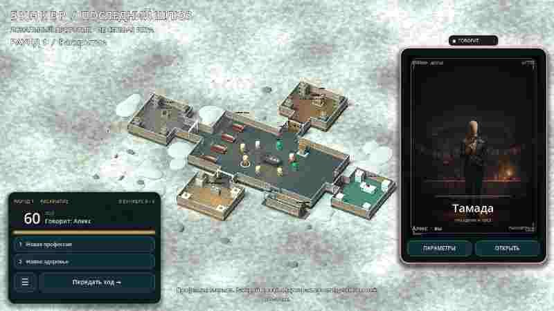
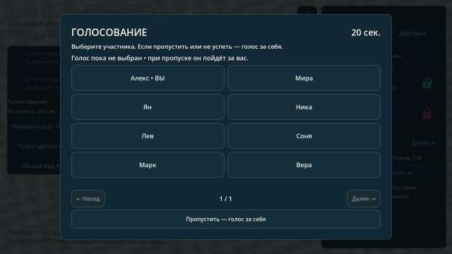
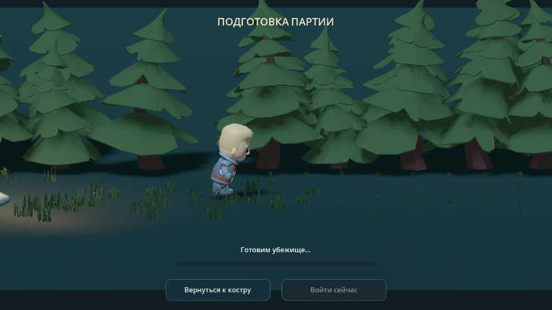
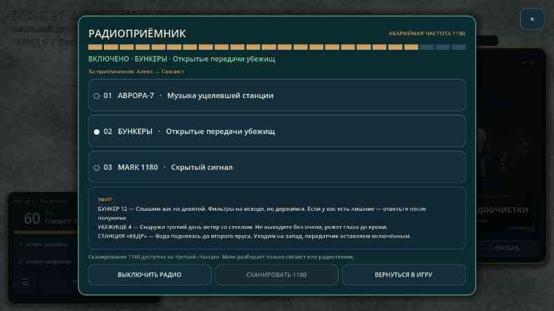

01 / 03✳
Твоя история —
твой шанс
Профессия, здоровье, навыки и характер. Каждая характеристика может стать причиной доверия — или исключения.
Мест в убежище хватит не всем. Раскрой свою историю, убеди остальных и попробуй пережить катастрофу.
Катастрофа изменила мир. Теперь группе незнакомцев предстоит решить, кто достоин места под землёй.
Профессия, здоровье, навыки и характер. Каждая характеристика может стать причиной доверия — или исключения.
Новая катастрофа, состав группы и планировка убежища меняют историю.
Обсуждайте, голосуйте и выясните, что ждёт тех, кто покинет бункер.
Игра ещё создаётся. Сейчас доступен локальный прототип: остальные участники — тестовые персонажи. Сетевой многопользовательской игры пока нет.
У каждого есть своя история. Но не у каждого будет место за дверью.
Попробовать игру ↗Узнайте профессию каждого и раскройте ещё одну характеристику в свой ход.
После всех выступлений у группы есть минута, чтобы обсудить решение.
На голосование — 20 секунд. Если не проголосовать, голос уйдёт за себя.
Раунды продолжаются, пока в бункере не останется ровно столько людей, сколько в нём мест.
Настоящие кадры из текущего прототипа. Игра развивается, и впереди ещё много работы.




← Перетаскивайте или листайте, чтобы увидеть больше →
«В бункере важнее не то,✳
что у тебя есть. А то, кого
ты готов оставить рядом.»
Игра пока в разработке — мы постепенно наполняем убежище жизнью.
Сейчас доступен APK для Android. Установка выполняется вручную: скачайте файл, откройте его и подтвердите установку в системе.
Пока нет. Это локальный прототип: остальные участники являются тестовыми персонажами. Настоящая сетевая игра ещё не реализована.
Текущий прототип доступен бесплатно. Он находится в разработке и может содержать ошибки.
Проверьте обновления в меню приложения или откройте страницу релизов. Скачайте новую версию и подтвердите установку; при одинаковой подписи профиль сохранится.
Твоя история начинается у последнего шлюза. Попробуй прототип и посмотри, кто останется внутри.